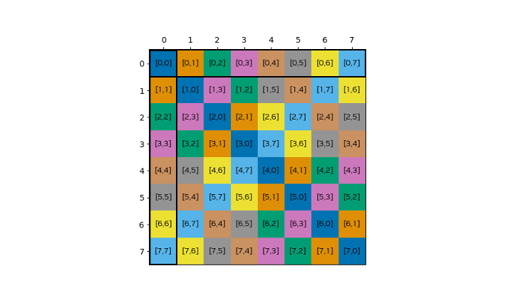

4.11. 异步数据拷贝#
建立在 第3.2.5节，本节提供了 GPU 内存层次结构内异步数据移动的详细指南和示例。它涵盖了用于按元素复制的 LDGSTS、用于批量（一维和多维）传输的张量内存加速器 (TMA) 以及用于寄存器到分布式共享内存副本的 STAS，并展示了这些机制如何与 异步屏障 和 pipelines.
4.11.1. 使用LDGSTS#
许多 CUDA 应用程序需要在全局内存和共享内存之间频繁移动数据。通常，这涉及复制较小的数据元素或执行不规则的内存访问模式。 LDGSTS 的主要目标（CC 8.0+，请参阅 PTX 文档）的目的是提供一种从全局内存到共享内存的高效异步数据传输机制，以实现更小的逐元素数据传输，同时通过重叠执行更好地利用计算资源。
Dimensions。 LDGSTS 支持复制 4、8 或 16 字节。复制 4 或 8 字节总是发生在所谓的 L1 ACCESS 模式中，在这种情况下，数据也缓存在 L1 中，而复制 16 字节则启用 L1 BYPASS 模式，在这种情况下，L1 不会被污染。
来源和目的地。 LDGSTS 异步复制操作支持的唯一方向是从全局内存到共享内存。根据要复制的数据的大小，指针需要对齐到 4、8 或 16 字节。当共享内存和全局内存的对齐都是 128 字节时，可以获得最佳性能。
Asynchronicity。使用 LDGSTS 的数据传输是 asynchronous 并被建模为异步线程操作（请参阅 异步线程和异步代理）。这允许发起线程继续计算，同时硬件异步复制数据。 实际上数据传输是否异步发生取决于硬件实现，并且将来可能会改变.
当操作完成时，LDGSTS 必须提供一个信号。 LDGSTS 可以使用 共享内存屏障 和 pipelines 作为提供完成信号的机制。默认情况下，每个线程只等待自己的 LDGSTS 副本。因此，如果您使用 LDGSTS 预取一些将与其他线程共享的数据， __syncthreads() 与LDGSTS完成机制同步后是必要的。
Direction |
异步复制（LDGSTS、CC 8.0+） |
||
|---|---|---|---|
Source |
Destination |
完成机制 |
API |
global |
global |
||
shared::cta |
global |
||
global |
shared::cta |
共享内存屏障， 管道 |
cuda::memcpy_async, cooperative_groups::memcpy_async, __pipeline_memcpy_async |
global |
shared::cluster |
||
shared::cluster |
shared::cta |
||
shared::cta |
shared::cta |
||
在接下来的章节中，我们将通过示例演示如何使用 LDGSTS，并解释不同 API 之间的差异。
4.11.1.1. 在条件代码中批量加载#
在这个模板示例中，线程块的第一个warp负责从中心以及左右光环集中加载所有所需的数据。对于同步副本，由于代码的条件性质，编译器可能会选择生成一系列从全局加载 (LDG) 到存储到共享 (STS) 的指令，而不是 3 个 LDG 后跟 3 个 STS，这将是加载数据以隐藏全局内存延迟的最佳方式。
__global__ void stencil_kernel(const float *left, const float *center, const float *right)
{
// 左光环（8 个元件）- 中心（32 个元件）- 右光环（8 个元件）
__shared__ float buffer[8 + 32 + 8];
const int tid = threadIdx.x;
if (tid < 8) {
buffer[tid] = left[tid]; // 左光环
} else if (tid >= 32 - 8) {
buffer[tid + 16] = right[tid]; // 右晕
}
if (tid < 32) {
buffer[tid + 8] = center[tid]; // 中心
}
__syncthreads();
// 计算模板
}
为了确保数据以最佳方式加载，我们可以将同步内存副本替换为直接从全局内存加载数据到共享内存的异步副本。这不仅通过将数据直接复制到共享内存来减少寄存器的使用，而且还确保来自全局内存的所有加载都在进行中。
#include <cooperative_groups.h>
#include <cuda/barrier>
__global__ void stencil_kernel(const float *left, const float *center, const float *right)
{
auto block = cooperative_groups::this_thread_block();
auto thread = cooperative_groups::this_thread();
using barrier_t = cuda::barrier<cuda::thread_scope_block>;
__shared__ barrier_t barrier;
__shared__ float buffer[8 + 32 + 8];
// 初始化同步对象。
if (block.thread_rank() == 0) {
init(&barrier, block.size());
}
__syncthreads();
// 版本 1：在单独的线程中发布副本。
if (tid < 8) {
cuda::memcpy_async(buffer + tid, left + tid, cuda::aligned_size_t<4>(sizeof(float)), barrier); // 左光环
// 或 cuda::memcpy_async(thread, buffer + tid, left + tid, cuda::aligned_size_t<4>(sizeof(float)), Barrier);
} else if (tid >= 32 - 8) {
cuda::memcpy_async(buffer + tid + 16, right + tid, cuda::aligned_size_t<4>(sizeof(float)), barrier); // 右晕
// 或 cuda::memcpy_async(thread, buffer + tid + 16, right + tid, cuda::aligned_size_t<4>(sizeof(float)), Barrier);
}
if (tid < 32) {
cuda::memcpy_async(buffer + 40, right + tid, cuda::aligned_size_t<4>(sizeof(float)), barrier); // 中心
// 或 cuda::memcpy_async(thread, buffer + 40, right + tid, cuda::aligned_size_t<4>(sizeof(float)), Barrier);
}
// 版本 2：跨所有线程协作发布副本。
cuda::memcpy_async(block, buffer, left, cuda::aligned_size_t<4>(8 * sizeof(float)), barrier); // 左光环
cuda::memcpy_async(block, buffer + 8, center, cuda::aligned_size_t<4>(32 * sizeof(float)), barrier); // 中心
cuda::memcpy_async(block, buffer + 40, right, cuda::aligned_size_t<4>(8 * sizeof(float)), barrier); // 右晕
// 等待所有副本完成。
barrier.arrive_and_wait();
__syncthreads();
// 计算模板
}
|
#include <cooperative_groups.h>
#include <cooperative_groups/memcpy_async.h>
namespace cg = cooperative_groups;
__global__ void stencil_kernel(const float *left, const float *center, const float *right)
{
cg::thread_block block = cg::this_thread_block();
// 左光环（8 个元件）- 中心（32 个元件）- 右光环（8 个元件）。
__shared__ float buffer[8 + 32 + 8];
// 跨所有线程协作发布副本。
cg::memcpy_async(block, buffer, left, 8 * sizeof(float)); // 左光环
cg::memcpy_async(block, buffer + 8, center, 32 * sizeof(float)); // 中心
cg::memcpy_async(block, buffer + 40, right, 8 * sizeof(float)); // 右晕
cg::wait(block); // 等待所有副本完成。
__syncthreads();
// 计算模板。
}
|
#include <cuda_pipeline.h>
__global__ void stencil_kernel(const float *left, const float *center, const float *right)
{
// 左光环（8 个元件）- 中心（32 个元件）- 右光环（8 个元件）。
__shared__ float buffer[8 + 32 + 8];
const int tid = threadIdx.x;
if (tid < 8) {
__pipeline_memcpy_async(buffer + tid, left + tid, sizeof(float)); // 左光环
} else if (tid >= 32 - 8) {
__pipeline_memcpy_async(buffer + tid + 16, right + tid, sizeof(float)); // 右晕
}
if (tid < 32) {
__pipeline_memcpy_async(buffer + tid + 8, center + tid, sizeof(float)); // 中心
}
__pipeline_commit();
__pipeline_wait_prior(0);
__syncthreads();
// 计算模板。
}
|
cuda::memcpy_async 过载 cuda::barrier 允许使用同步异步数据传输 异步屏障。此重载执行复制操作，就像由绑定到屏障的另一个线程执行的那样，通过在创建时增加当前阶段的预期计数，并在复制操作完成时减少它，使得 barrier 仅当参与屏障的所有线程都到达时才会前进，并且所有 memcpy_async 到目前阶段的结界已经完成。我们使用块范围 barrier，块中的所有线程都参与其中，并将到达并在屏障上等待与 arrive_and_wait，因为我们在阶段之间不执行任何工作。
请注意，我们可以使用线程级副本（版本 1）或集体副本（版本 2）来实现相同的结果。在版本 2 中，API 将自动处理如何在幕后完成副本。在这两个版本中，我们都使用 cuda::aligned_size_t<4>() 通知编译器数据已对齐到 4 字节，并且要复制的数据大小是 4 的倍数以启用 LDGSTS。请注意，为了与 cuda::barrier, cuda::memcpy_async 从 cuda/barrier 这里使用了 header。
cooperative_groups::memcpy_async 实现协调块中所有线程之间的内存传输，但同步完成 cg::wait(block) 而不是显式的屏障操作。
基于低级原语的实现使用 __pipeline_memcpy_async() 启动逐元素内存传输， __pipeline_commit() 提交该批副本，并且 __pipeline_wait_prior(0) 等待管道中的所有操作完成。与更高级别的 API 相比，这提供了最直接的控制，但代价是更冗长的代码。它还确保 LDGSTS 将在后台使用，而更高级别的 API 无法保证这一点。
注
cooperative_groups::memcpy_async 在本示例中，API 的效率低于其他 API，因为它在启动时立即自动提交每个复制操作，从而阻止了其他 API 启用的在单个提交操作之前批处理多个副本的优化。
4.11.1.2. 预取数据#
在本例中，我们将演示如何使用异步数据副本将数据从全局内存预取到共享内存。在迭代复制和计算模式中，这允许通过当前迭代的计算隐藏未来迭代的数据传输延迟，从而可能增加传输字节数。
#include <cooperative_groups.h>
#include <cuda/pipeline>
template <size_t num_stages = 2 /* 具有 num_stages 阶段的管道 */>
__global__ void prefetch_kernel(int* global_out, int const* global_in, size_t size, size_t batch_size) {
auto grid = cooperative_groups::this_grid();
auto block = cooperative_groups::this_thread_block();
auto thread = cooperative_groups::this_thread();
assert(size == batch_size * grid.size()); // 假设输入大小适合batch_size * grid_size
extern __shared__ int shared[]; // num_stages * block.size() * sizeof(int) 字节
size_t shared_offset[num_stages];
for (int s = 0; s < num_stages; ++s) shared_offset[s] = s * block.size();
cuda::pipeline<cuda::thread_scope_thread> pipeline = cuda::make_pipeline();
auto block_batch = [&](size_t batch) -> int {
return block.group_index().x * block.size() + grid.size() * batch;
};
// 用第一个“num_stages”批次填充管道。
for (int s = 0; s < num_stages; ++s) {
pipeline.producer_acquire();
cuda::memcpy_async(shared + shared_offset[s] + tid, global_in + block_batch(s) + tid, cuda::aligned_size_t<4>(sizeof(int)), pipeline);
pipeline.producer_commit();
}
int stage = 0;
// compute_batch：下一个要处理的批次
// fetch_batch：从全局内存中获取的下一批
for (size_t compute_batch = 0, fetch_batch = num_stages; compute_batch < batch_size; ++compute_batch, ++fetch_batch) {
// 等待第一个请求的阶段完成。
constexpr size_t pending_batches = num_stages - 1;
cuda::pipeline_consumer_wait_prior<pending_batches>(pipeline);
__syncthreads(); // 如果每个线程都处理它复制的数据，则不需要。
// 对当前批次进行计算
compute(global_out + block_batch(compute_batch) + tid, shared + shared_offset[stage] + tid);
// 释放当前阶段。
pipeline.consumer_release();
__syncthreads(); // 如果每个线程都处理它复制的数据，则不需要。
// 在当前计算批次之前加载未来阶段“num_stages”。
pipeline.producer_acquire();
if (fetch_batch < batch_size) {
cuda::memcpy_async(shared + shared_offset[stage] + tid, global_in + block_batch(fetch_batch) + tid, cuda::aligned_size_t<4>(sizeof(int)), pipeline);
}
pipeline.producer_commit();
stage = (stage + 1) % num_stages;
}
}
|
#include <cooperative_groups.h>
#include <cooperative_groups/memcpy_async.h>
namespace cg = cooperative_groups;
template <size_t num_stages = 2 /* 具有 num_stages 阶段的管道 */>
__global__ void prefetch_kernel(int* global_out, int const* global_in, size_t size, size_t batch_size) {
auto grid = cooperative_groups::this_grid();
auto block = cooperative_groups::this_thread_block();
assert(size == batch_size * grid.size()); // 假设输入大小适合batch_size * grid_size
extern __shared__ int shared[]; // num_stages * block.size() * sizeof(int) 字节
size_t shared_offset[num_stages];
for (int s = 0; s < num_stages; ++s) shared_offset[s] = s * block.size();
cuda::pipeline<cuda::thread_scope_thread> pipeline = cuda::make_pipeline();
auto block_batch = [&](size_t batch) -> int {
return block.group_index().x * block.size() + grid.size() * batch;
};
// 用第一个“num_stages”批次填充管道。
for (int s = 0; s < num_stages; ++s) {
size_t block_batch_idx = block_batch(s);
cg::memcpy_async(block, shared + shared_offset[s], global_in + block_batch_idx, cuda::aligned_size_t<4>(sizeof(int));
}
int stage = 0;
// compute_batch：下一个要处理的批次
// fetch_batch：从全局内存中获取的下一批
for (size_t compute_batch = 0, fetch_batch = num_stages; compute_batch < batch_size; ++compute_batch, ++fetch_batch) {
// 等待第一个请求的阶段完成。
size_t pending_batches = (fetch_batch < batch_size - num_stages) ? num_stages - 1 : batch_size - fetch_batch - 1;
cg::wait_prior(pending_batches);
__syncthreads(); // 如果每个线程都处理它复制的数据，则不需要。
// 对当前批次进行计算。
compute(global_out + block_batch(compute_batch) + tid, shared + shared_offset[stage] + tid);
__syncthreads(); // 如果每个线程都处理它复制的数据，则不需要。
// 在当前计算批次之前加载未来阶段“num_stages”。
size_t fetch_batch_idx = block_batch(fetch_batch);
if (fetch_batch < batch_size) {
cg::memcpy_async(block, shared + shared_offset[stage], global_in + block_batch(fetch_batch), cuda::aligned_size_t<4>(sizeof(int)) * block.size());
}
stage = (stage + 1) % num_stages;
}
}
|
#include <cooperative_groups.h>
#include <cuda_awbarrier_primitives.h>
template <size_t num_stages = 2 /* 具有 num_stages 阶段的管道 */>
__global__ void prefetch_kernel(int* global_out, int const* global_in, size_t size, size_t batch_size) {
auto grid = cooperative_groups::this_grid();
auto block = cooperative_groups::this_thread_block();
assert(size == batch_size * grid.size()); // 假设输入大小适合batch_size * grid_size
extern __shared__ int shared[]; // num_stages * block.size() * sizeof(int) 字节
size_t shared_offset[num_stages];
for (int s = 0; s < num_stages; ++s) shared_offset[s] = s * block.size();
auto block_batch = [&](size_t batch) -> int {
return block.group_index().x * block.size() + grid.size() * batch;
};
// 用第一个“num_stages”批次填充管道。
for (int s = 0; s < num_stages; ++s) {
__pipeline_memcpy_async(shared + shared_offset[s] + tid, global_in + block_batch(s)+ tid, cuda::aligned_size_t<4>(sizeof(int)));
__pipeline_commit();
}
// compute_batch：下一个要处理的批次
// fetch_batch：从全局内存中获取的下一批
for (size_t compute_batch = 0, fetch_batch = num_stages; compute_batch < batch_size; ++compute_batch, ++fetch_batch) {
// 等待第一个请求的阶段完成。
constexpr size_t pending_batches = num_stages - 1;
__pipeline_wait_prior<pending_batches>();
__syncthreads(); // 如果每个线程都处理它复制的数据，则不需要。
// 对当前批次进行计算。
compute(global_out + block_batch(compute_batch) + tid, shared + shared_offset[stage] + tid);
__syncthreads(); // 如果每个线程都处理它复制的数据，则不需要。
// 在当前计算批次之前加载未来阶段“num_stages”。
if (fetch_batch < batch_size) {
__pipeline_memcpy_async(shared + shared_offset[stage] + tid, global_in + block_batch(fetch_batch) + tid, cuda::aligned_size_t<4>(sizeof(int)));
}
__pipeline_commit();
stage = (stage + 1) % num_stages;
}
}
|
cuda::memcpy_async 实现演示了使用多阶段数据预取 cuda::pipeline （见 流水线）与 cuda::memcpy_async. 它会：
初始化线程本地的管道。
通过调度启动管道
num_stagesmemcpy_asyncoperations.循环所有批次：它在当前批次完成时阻塞所有线程，然后对当前批次执行计算，最后调度下一个批次
memcpy_async如果有的话。
cooperative_groups::memcpy_async 实现演示了使用多阶段数据预取 cooperative_groups::memcpy_async。与之前的实现的主要区别在于我们不使用管道对象，而是依赖于 cooperative_groups::memcpy_async 在后台分阶段安排内存传输。
CUDA C 原语实现演示了使用低级原语以与第一个非常相似的方式进行多阶段数据预取。
在此示例中实现高效代码生成的一个重要细节是保持 num_stages 管道中的批次，即使没有更多批次可供提取。这是通过提交到管道来完成的，即使没有更多的批次可以获取（pipeline.producer_commit() 或 __pipeline_commit()）。请注意，这对于协作组 API 是不可能的，因为我们无法访问内部管道。
4.11.1.3. 通过 Warp 专业化实现生产者-消费者模式#
在此示例中，我们将演示如何实现生产者-消费者模式，其中单个 warp 专门作为生产者执行从全局到共享内存的异步数据复制，而其余 warp 消耗共享内存中的数据并执行计算。为了实现生产者线程和消费者线程之间的并发，我们在共享内存中使用双缓冲。当消费者warp处理一个缓冲区中的数据时，生产者warp将下一批数据异步提取到另一个缓冲区中。
#include <cooperative_groups.h>
#include <cuda/pipeline>
#pragma nv_diag_suppress static_var_with_dynamic_init
using pipeline = cuda::pipeline<cuda::thread_scope_block>;
__device__ void produce(pipeline &pipe, int num_stages, int stage, int num_batches, int batch, float *buffer, int buffer_len, float *in, int N)
{
if (batch < num_batches)
{
pipe.producer_acquire();
/* 使用异步内存复制将数据从 in(batch) 复制到 buffer(stage) */
cuda::memcpy_async(buffer + stage * buffer_len + threadIdx.x, in + batch * buffer_len + threadIdx.x, cuda::aligned_size_t<4>(sizeof(float)), pipe);
pipe.producer_commit();
}
}
__device__ void consume(pipeline &pipe, int num_stages, int stage, int num_batches, int batch, float *buffer, int buffer_len, float *out, int N)
{
pipe.consumer_wait();
/* 消耗缓冲区（阶段）并更新输出（批量） */
pipe.consumer_release();
}
__global__ void producer_consumer_pattern(float *in, float *out, int N, int buffer_len)
{
auto block = cooperative_groups::this_thread_block();
constexpr int warpSize = 32;
/* 下面声明的共享内存缓冲区的大小为 2 * buffer_len
这样我们就可以在两个缓冲区之间交替工作。
buffer_0 = 缓冲区且 buffer_1 = 缓冲区 + buffer_len */
__shared__ extern float buffer[];
const int num_batches = N / buffer_len;
// 创建一个具有 2 个阶段的分区管道，其中第一个 warp 是生产者，其他 warp 是消费者。
constexpr auto scope = cuda::thread_scope_block;
constexpr int num_stages = 2;
cuda::std::size_t producer_count = warpSize;
__shared__ cuda::pipeline_shared_state<scope, num_stages> shared_state;
pipeline pipe = cuda::make_pipeline(block, &shared_state, producer_count);
// 生产者填补管道
if (block.thread_rank() < producer_count)
for (int s = 0; s < num_stages; ++s)
produce(pipe, num_stages, s, num_batches, s, buffer, buffer_len, in, N);
// 处理批次
int stage = 0;
for (size_t b = 0; b < num_batches; ++b)
{
if (block.thread_rank() < producer_count)
{
// 生产者预取下一批
produce(pipe, num_stages, stage, num_batches, b + num_stages, buffer, buffer_len, in, N);
}
else
{
// 消费者消费最旧的批次
consume(pipe, num_stages, stage, num_batches, b, buffer, buffer_len, out, N);
}
stage = (stage + 1) % num_stages;
}
}
|
#include <cooperative_groups.h>
#include <cuda_awbarrier_primitives.h>
__device__ void produce(__mbarrier_t ready[], __mbarrier_t filled[], float *buffer, int buffer_len, float *in, int N)
{
for (int i = 0; i < N / buffer_len; ++i)
{
__mbarrier_token_t token = __mbarrier_arrive(&ready[i % 2]); /* 等待 buffer_(i%2) 准备好被填充 */
while(!__mbarrier_try_wait(&ready[i % 2], token, 1000)) {}
/* 产生，即填充，buffer_(i%2) */
__pipeline_memcpy_async(buffer + i * buffer_len + threadIdx.x, in + i * buffer_len + threadIdx.x, cuda::aligned_size_t<4>(sizeof(float)));
__pipeline_arrive_on(filled[i % 2]);
__mbarrier_arrive(filled[i % 2]); /* buffer_(i%2) 已满 */
}
}
__device__ void consume(__mbarrier_t ready[], __mbarrier_t filled[], float *buffer, int buffer_len, float *out, int N)
{
__mbarrier_arrive(&ready[0]); /* buffer_0 已准备好进行初始填充 */
__mbarrier_arrive(&ready[1]); /* buffer_1 已准备好进行初始填充 */
for (int i = 0; i < N / buffer_len; ++i)
{
__mbarrier_token_t token = __mbarrier_arrive(&filled[i % 2]);
while(!__mbarrier_try_wait(&filled[i % 2], token, 1000)) {}
/* 消耗缓冲区_(i%2) */
__mbarrier_arrive(&ready[i % 2]); /* buffer_(i%2) 已准备好重新填充 */
}
}
__global__ void producer_consumer_pattern(int N, float *in, float *out, int buffer_len)
{
/* 下面声明的共享内存缓冲区的大小为 2 * buffer_len
这样我们就可以在两个缓冲区之间交替工作。
buffer_0 = 缓冲区且 buffer_1 = 缓冲区 + buffer_len */
__shared__ extern float buffer[];
/* bar[0] 和 bar[1] 跟踪缓冲区 buffer_0 和 buffer_1 是否已准备好填充，
而 bar[2] 和 bar[3] 分别跟踪缓冲区 buffer_0 和 buffer_1 是否已填充 */
__shared__ __mbarrier_t bar[4];
// 初始化障碍
auto block = cooperative_groups::this_thread_block();
if (block.thread_rank() < 4)
__mbarrier_init(bar + block.thread_rank(), block.size());
__syncthreads();
if (block.thread_rank() < warpSize)
produce(bar, bar + 2, buffer, buffer_len, in, N);
else
consume(bar, bar + 2, buffer, buffer_len, out, N);
}
|
cuda::memcpy_async 实现展示了具有最高抽象级别的 API cuda::memcpy_async 和一个 cuda::pipeline 有 2 个阶段。它使用分区管道（参见 流水线）其中第一个warp 作为生产者，其余 warp 作为消费者。生产商最初填充了两个管道阶段。然后，在主处理循环中，当消费者处理当前批次时，生产者获取未来批次的数据，从而保持稳定的工作流。
基于原语的 CUDA C 原语实现结合了 __pipeline_memcpy_async() 和 共享内存屏障 作为协调异步内存传输的完成机制。的 __pipeline_arrive_on() 函数将内存副本与屏障关联起来。它将屏障到达计数加一，并且当所有异步操作在其完成之前排序时，到达计数会自动减一，因此对到达计数的净影响为零。因此，我们还需要显式地等待屏障 __mbarrier_arrive().
4.11.2. 使用张量内存加速器（TMA）#
许多应用程序需要将大量数据移入或移出全局内存。通常，数据作为具有非顺序数据访问模式的多维数组布置在全局内存中。为了减少全局内存访问，此类数组的子块在计算中使用之前会被复制到共享内存。加载和存储涉及容易出错且重复的地址计算。要卸载这些计算，请使用计算能力 9.0 (Hopper) 及更高版本（请参阅 PTX 文档）有一个 张量内存加速器 （TMA）。 TMA 的主要目标是为多维数组提供从全局内存到共享内存的高效数据传输机制。
Naming。张量内存加速器 (TMA) 是一个广义术语，用于指代本节中描述的功能。为了向前兼容并减少与 PTX ISA 的差异，本节中的文本将 TMA 操作称为 批量异步复制 或 批量张量异步副本，取决于所使用的具体副本类型。术语“批量”用于将这些操作与上一节中描述的异步内存操作进行对比。
Dimensions。 TMA 支持复制一维和多维数组（最多 5 维）。一维连续数组的批量异步副本的编程模型与多维数组的批量张量异步副本的编程模型不同。要执行多维数组的批量张量异步复制，硬件需要 张量图。该对象描述了多维数组在全局和共享内存中的布局。张量图通常是使用以下命令在主机上创建的 cuTensorMapEncode API 然后从主机传输到设备 const 内核参数注释为 __grid_constant__ （见 __grid_constant__ 参数）。张量图作为 const 内核参数注释为 __grid_constant__，并且可以在设备上用于在共享内存和全局内存之间复制数据块。相反，执行连续一维数组的批量异步复制不需要张量映射：它可以使用指针和大小参数在设备上执行。
来源和目的地。 TMA 操作的源地址和目标地址可以位于共享内存或全局内存中。这些操作可以从全局内存读取数据到共享内存，从共享内存写入数据到全局内存，还可以从共享内存复制到 分布式共享内存 同一簇中的另一个块。此外，当在集群中时，批量异步张量操作可以指定为 multicast。在这种情况下，数据可以从全局内存传输到集群内多个块的共享内存。组播功能针对目标架构进行了优化 sm_90a 并且可能有 性能显着降低 在其他目标上。因此，建议与 计算架构 sm_90a.
Asynchronicity。使用 TMA 的数据传输是 asynchronous 并被建模为异步代理操作（请参阅 异步线程和异步代理）。这允许发起线程继续计算，同时硬件异步复制数据。 实际上数据传输是否异步发生取决于硬件实现，并且将来可能会改变。有几个 完成机制 批量异步操作可以用来表示它们已完成。当操作从全局内存读取到共享内存时，块中的任何线程都可以通过等待 共享内存屏障。当批量异步操作将数据从共享内存写入全局或分布式共享内存时，只有发起线程可以等待操作完成。这是使用一个 批量异步组 基于完成机制。描述完成机制的表格可以在下面和中找到 PTX ISA.
Direction |
异步复制（TMA、CC 9.0+） |
|
|---|---|---|
Source |
Destination |
完成机制 |
global |
global |
|
shared::cta |
global |
批量异步组 |
global |
shared::cta |
共享内存屏障 |
global |
shared::cluster |
共享内存屏障（多播） |
shared::cta |
shared::cluster |
共享内存屏障 |
shared::cta |
shared::cta |
|
4.11.2.1. 使用TMA传输一维数组#
下表总结了批量异步 TMA 的可能源和目标内存空间以及完成机制以及公开它的 API。
Direction |
批量异步复制（TMA、CC9.0+） |
||
|---|---|---|---|
Source |
Destination |
完成机制 |
API |
global |
global |
||
shared::cta |
global |
批量异步组 |
|
global |
shared::cta |
共享内存屏障 |
cuda::memcpy_async, cuda::device::memcpy_async_tx, cuda::ptx::cp_async_bulk |
global |
shared::cluster |
共享内存屏障 |
|
shared::cta |
shared::cluster |
共享内存屏障 |
|
shared::cta |
shared::cta |
||
某些功能需要内联 PTX，目前可通过 cuda::ptx 命名空间中的 CUDA 标准 C++ 图书馆。可以使用以下代码检查这些包装器的可用性：
#if defined(__CUDA_MINIMUM_ARCH__) && __CUDA_MINIMUM_ARCH__ < 900
static_assert(false, "Device code is being compiled with older architectures that are incompatible with TMA.");
#endif // __CUDA_MINIMUM_ARCH__
请注意 cuda::memcpy_async 如果源地址和目标地址是 16 字节对齐且大小是 16 字节的倍数，则使用 TMA，否则将回退到同步副本。另一方面， cuda::device::memcpy_async_tx 或 cuda::ptx::cp_async_bulk 始终使用 TMA，如果不满足要求，将导致未定义的行为。
下面我们通过一个例子演示如何使用批量异步复制。该示例读取-修改-写入一个一维数组。内核经过以下步骤：
初始化共享内存屏障作为从全局内存到共享内存的批量异步复制的完成机制。
启动将内存块从全局内存复制到共享内存。
到达并等待共享内存屏障以完成复制。
增加共享内存缓冲区值。
使用代理栅栏确保共享内存写入（通用代理）对后续批量异步复制（异步代理）可见。
启动共享内存中缓冲区到全局内存的批量异步复制。
等待批量异步复制完成共享内存的读取。
#include <cuda/barrier>
#include <cuda/ptx>
using barrier = cuda::barrier<cuda::thread_scope_block>;
namespace ptx = cuda::ptx;
static constexpr size_t buf_len = 1024;
__device__ inline bool is_elected()
{
unsigned int tid = threadIdx.x;
unsigned int warp_id = tid / 32;
unsigned int uniform_warp_id = __shfl_sync(0xFFFFFFFF, warp_id, 0); // 从通道 0 广播。
return (uniform_warp_id == 0 && ptx::elect_sync(0xFFFFFFFF)); // 在 warp 0 中选举一个引导线程。
}
__global__ void add_one_kernel(int* data, size_t offset)
{
// 共享内存缓冲区。目标共享内存缓冲区
// 批量操作应该是 16 字节对齐的。
__shared__ alignas(16) int smem_data[buf_len];
// 1. 使用参与屏障的线程数初始化共享内存屏障。
#pragma nv_diag_suppress static_var_with_dynamic_init
__shared__ barrier bar;
if (threadIdx.x == 0) {
init(&bar, blockDim.x);
}
__syncthreads();
// 2. 启动TMA 传输以将全局数据从单个线程复制到共享内存。
if (is_elected()) {
// 启动异步副本并传达预计输入的字节数（事务计数）。
// 版本 1：cuda::memcpy_async
cuda::memcpy_async(
smem_data, data + offset,
cuda::aligned_size_t<16>(sizeof(smem_data)),
bar);
// 版本 2：cuda::device::memcpy_async_tx
// cuda::device::memcpy_async_tx(
// smem_data，数据+偏移量，
// cuda::aligned_size_t<16>(sizeof(smem_data)),
// bar);
// cuda::设备::barrier_expect_tx(
// cuda::设备::barrier_native_handle(栏),
// sizeof(smem_data));
// 版本 3：cuda::ptx::cp_async_bulk
// ptx::cp_async_bulk(
// ptx::space_shared、ptx::space_global、
// smem_data，数据+偏移量，
// 大小（smem_data），
// cuda::device::barrier_native_handle(bar));
// cuda::设备::barrier_expect_tx(
// cuda::设备::barrier_native_handle(栏),
// sizeof(smem_data));
}
// 3a.所有线程都到达屏障。
barrier::arrival_token token = bar.arrive();
// 3b.等待数据到达。
bar.wait(std::move(token));
// 4. 计算 saxpy 并写回共享内存。
for (int i = threadIdx.x; i < buf_len; i += blockDim.x) {
smem_data[i] += 1;
}
// 5. 等待共享内存写入对 TMA 引擎可见。
ptx::fence_proxy_async(ptx::space_shared);
__syncthreads();
// 在syncthreads之后，所有线程的写入对TMA引擎都是可见的。
// 6. 启动TMA 传输以将共享内存复制到全局内存。
if (is_elected()) {
ptx::cp_async_bulk(
ptx::space_global, ptx::space_shared,
data + offset, smem_data, sizeof(smem_data));
// 7. 等待TMA 传输完成读取共享内存。
// 从之前的批量复制操作中创建一个“批量异步组”。
ptx::cp_async_bulk_commit_group();
// 等待组完成从共享内存的读取。
ptx::cp_async_bulk_wait_group_read(ptx::n32_t<0>());
}
}
屏障初始化。屏障是用参与该块的线程数来初始化的。因此，只有在以下情况下，障碍才会翻转： 所有线程都已到达此屏障。共享内存屏障描述 更详细地在 共享内存屏障.
TMA 读取。批量异步复制指令指示 硬件将大量数据复制到共享内存中，并更新 交易数量 完成读取后的共享内存屏障。一般来说，发行为 尽可能大的少量批量副本可以获得最佳性能。 因为复制可以由硬件异步执行，所以不是 需要将副本分割成更小的块。
启动批量异步复制操作的线程还会告诉屏障预计将有多少事务 (tx) 到达。
在这种情况下，事务以字节为单位计数。这是自动执行的 cuda::memcpy_async，但不是由
cuda::device::memcpy_async_tx 或 cuda::ptx::cp_async_bulk 之后我们需要显式调用 cuda::ptx::mbarrier_expect_tx。
如果多个线程更新事务计数，则预期事务将是总和
的更新。只有当所有线程都到达时，屏障才会翻转 —
所有字节均已到达。一旦屏障翻转，字节就可以安全读取
来自共享内存，无论是由线程还是后续的
批量异步复制。有关障碍交易会计的更多信息
可以在 跟踪异步内存操作.
障碍等待。等待障碍翻转是使用代币完成的 bar.wait()。使用屏障的显式相位跟踪可能会更有效（请参阅 显式相位跟踪).
SMEM写入和同步。读取和写入共享缓冲区值的增量
内存。为了使写入对后续批量异步副本可见，
cuda::ptx::fence_proxy_async 使用函数。这命令写入
在从批量异步复制操作进行后续读取之前共享内存，
它通过异步代理读取。所以每个线程首先命令写入
异步代理中共享内存中的对象通过
cuda::ptx::fence_proxy_async，所有线程的这些操作是
在线程 0 中执行异步操作之前排序
__syncthreads().
TMA写入和同步。再次从共享内存写入全局内存
由单个线程发起。写入的完成不会被跟踪
共享内存屏障。相反，使用线程本地机制。多个
写入可以批量化为所谓的 批量异步组。随后，
线程可以等待该组中的所有操作完成读取
共享内存（如上面的代码）或已完成对全局的写入
内存，使写入对发起线程可见。欲了解更多信息，
请参阅 PTX ISA 文档 cp.async.bulk.wait_group。
请注意，批量异步和非批量异步复制指令具有
不同的异步组：两者都存在 cp.async.wait_group 或 cp.async.bulk.wait_group instructions.
注
建议通过块中的单个线程启动 TMA 操作。
使用时 if (threadIdx.x == 0) 可能看起来足够了，编译器不能
验证确实只有一个线程正在启动复制并且可能会插入剥离
循环遍历所有活动线程，这会导致warp序列化并减少
性能。为了防止这种情况发生，我们定义 is_elected() 辅助函数
用途 cuda::ptx::elect_sync 从 warp 0 中选择一个线程——众所周知
编译器 - 执行副本，使其生成更有效的代码。
或者，可以通过以下方式实现相同的效果 cooperative_groups::invoke_one.
批量异步指令对其源和数据有特定的对齐要求 目的地地址。更多信息请参见下表。
地址/尺寸 |
Alignment |
|---|---|
全局内存地址 |
必须是 16 字节对齐。 |
共享内存地址 |
必须是 16 字节对齐。 |
共享内存屏障地址 |
必须是 8 字节对齐（这是由 |
转让规模 |
必须是 16 字节的倍数。 |
4.11.2.1.1. 预取数据#
在本例中，我们将演示如何使用 TMA 将数据从全局内存预取到共享内存。在迭代复制和计算模式中，这允许通过当前迭代的计算隐藏未来迭代的数据传输延迟，从而可能增加传输字节数。
#include <cooperative_groups.h>
#include <cuda/barrier>
#include <cuda/ptx>
namespace ptx = cuda::ptx;
namespace cg = cooperative_groups;
__device__ inline bool is_elected()
{
unsigned int tid = threadIdx.x;
unsigned int warp_id = tid / 32;
unsigned int uniform_warp_id = __shfl_sync(0xFFFFFFFF, warp_id, 0); // 从通道 0 广播。
return (uniform_warp_id == 0 && ptx::elect_sync(0xFFFFFFFF)); // 在 warp 0 中选举一个引导线程。
}
template <int block_size, int num_stages>
__global__ void prefetch_kernel(int* global_out, int const* global_in, size_t size, size_t batch_size) {
auto grid = cg::this_grid();
auto block = cg::this_thread_block();
const int tid = threadIdx.x;
assert(size == batch_size * grid.size()); // 假设输入大小适合batch_size * grid_size
// 1. 初始化阶段
__shared__ int shared[num_stages * block_size];
size_t shared_offset[num_stages];
for (int s = 0; s < num_stages; ++s) shared_offset[s] = s * block.size();
auto block_batch = [&](size_t batch) -> int {
return block.group_index().x * block.size() + grid.size() * batch;
};
// 使用参与屏障的线程数初始化共享内存屏障。
// 我们将为屏障使用显式相位跟踪，这使得我们只有一个
// 线程到达屏障以设置事务计数，其他线程等待
// 基于奇偶校验的相位翻转。
#pragma nv_diag_suppress static_var_with_dynamic_init
__shared__ cuda::barrier<cuda::thread_scope_block> bar[num_stages];
if (tid == 0) {
#pragma unroll num_stages
for (int i = 0; i < num_stages; i++) {
init(&bar[i], 1);
}
}
__syncthreads();
// 用第一个“num_stages”批次填充管道。
if (is_elected()) {
size_t num_bytes = block_size * sizeof(int);
#pragma unroll num_stages
for (int s = 0; s < num_stages; ++s) {
cuda::device::memcpy_async_tx(&shared[shared_offset[s]], &global_in[block_batch(s)], cuda::aligned_size_t<16>(num_bytes), bar[s]);
(void)cuda::device::barrier_arrive_tx(bar[s], 1, num_bytes);
}
}
// 2. 主处理循环。
// compute_batch：下一个要处理的批次。
// fetch_batch：从全局内存中获取的下一批。
int stage = 0; // 共享内存缓冲区中的当前阶段。
uint32_t parity = 0; // 势垒平价
for (size_t compute_batch = 0, fetch_batch = num_stages; compute_batch < batch_size; ++compute_batch, ++fetch_batch) {
// (a) 等待当前批次。
while (!ptx::mbarrier_try_wait_parity(ptx::sem_acquire, ptx::scope_cta, cuda::device::barrier_native_handle(bar[stage]), parity)) {}
// (b) 对当前批次进行计算。
compute(global_out + block_batch(compute_batch) + tid, shared + shared_offset[stage] + tid);
__syncthreads();
// (c) 在当前计算批次之前加载下一个阶段“num_stages”。
if (is_elected() && fetch_batch < batch_size) {
size_t num_bytes = block_size * sizeof(int);
cuda::device::memcpy_async_tx(&shared[shared_offset[stage]], &global_in[block_batch(fetch_batch)], cuda::aligned_size_t<16>(num_bytes), bar[stage]);
(void)cuda::device::barrier_arrive_tx(bar[stage], 1, num_bytes);
}
// (d) 舞台管理。
stage++;
if (stage == num_stages) {
stage = 0;
parity ^= 1;
}
}
}
|
这个例子实现了 多级数据预取 using cuda::device::memcpy_async_tx 用于 TMA 副本，并采用具有显式相位跟踪的共享内存屏障来同步副本。
初始化阶段：设置共享内存屏障（每个阶段一个）并预加载第一个
num_stages批处理到不同的共享内存部分。主处理循环:
Wait：用途
mbarrier_try_wait_parity()等待当前批次完成复制。Compute：处理当前批次数据。
Prefetch: 安排下一次
memcpy_async_tx对未来数据的操作（保留num_stages前面）。舞台管理：使用旋转缓冲区方法循环各个阶段并跟踪屏障奇偶校验。
4.11.2.2. 使用TMA传输多维数组#
在本节中，我们将重点关注多维 TMA 副本。 一维和多维情况之间的主要区别是 必须在主机上创建张量映射并将其传递给 CUDA 内核。
下表总结了批量张量异步 TMA 的可能源和目标内存空间以及完成机制以及在设备代码中公开它的 API。
Direction |
批量张量异步复制（TMA、CC9.0+） |
||
|---|---|---|---|
Source |
Destination |
完成机制 |
API |
global |
global |
||
shared::cta |
global |
批量异步组 |
|
global |
shared::cta |
共享内存屏障 |
|
global |
shared::cluster |
共享内存屏障 |
|
shared::cta |
shared::cluster |
共享内存屏障 |
|
shared::cta |
shared::cta |
||
所有功能都需要内联 PTX，目前可通过 cuda::ptx 命名空间中的 CUDA 标准 C++ library.
下面，我们描述如何使用 CUDA 驱动 API 创建张量图，如何 将其传递到设备，以及如何在设备上使用它。
驱动程序接口。使用以下命令创建张量图 cuTensorMapEncodeTiled
驱动程序 API。可以通过直接链接到驱动程序来访问此API
（-lcuda）或通过使用 cudaGetDriverEntryPointByVersion
API。下面，我们展示如何获取指向 cuTensorMapEncodeTiled API。
欲了解更多信息，请参阅 驱动程序入口点访问.
#include <cudaTypedefs.h> // PFN_cuTensorMapEncodeTiled、CUtensorMap
PFN_cuTensorMapEncodeTiled_v12000 get_cuTensorMapEncodeTiled() {
// 获取指向 cuTensorMapEncodeTiled 的指针
cudaDriverEntryPointQueryResult driver_status;
void* cuTensorMapEncodeTiled_ptr = nullptr;
CUDA_CHECK(cudaGetDriverEntryPointByVersion("cuTensorMapEncodeTiled", &cuTensorMapEncodeTiled_ptr, 12000, cudaEnableDefault, &driver_status));
assert(driver_status == cudaDriverEntryPointSuccess);
return reinterpret_cast<PFN_cuTensorMapEncodeTiled_v12000>(cuTensorMapEncodeTiled_ptr);
}
Creation。创建张量图需要许多参数。其中
它们是指向全局内存中数组的基指针，数组的大小
（以元素数量为单位）、从一行到下一行的步长（以字节为单位）、
共享内存缓冲区的大小（以元素数为单位）。下面的代码创建
用于描述大小的二维行主数组的张量图 GMEM_HEIGHT
x GMEM_WIDTH。注意参数的顺序：移动最快的维度
首先。
CUtensorMap tensor_map{};
// 等级是数组的维数。
constexpr uint32_t rank = 2;
uint64_t size[rank] = {GMEM_WIDTH, GMEM_HEIGHT};
// 步幅是从一行的第一个元素到下一行要遍历的字节数。
// 它必须是 16 的倍数。
uint64_t stride[rank - 1] = {GMEM_WIDTH * sizeof(int)};
// box_size 是用作共享内存缓冲区的大小
// TMA 传输的目的地。
uint32_t box_size[rank] = {SMEM_WIDTH, SMEM_HEIGHT};
// 元素之间的距离，以 sizeof(element) 为单位。步幅为2
// 例如，可用于仅加载复值张量的实部。
uint32_t elem_stride[rank] = {1, 1};
// 获取指向 cuTensorMapEncodeTiled 驱动程序 API 的函数指针。
auto cuTensorMapEncodeTiled = get_cuTensorMapEncodeTiled();
// 创建张量描述符。
CUresult res = cuTensorMapEncodeTiled(
&tensor_map, // CUtensorMap *tensorMap,
CUtensorMapDataType::CU_TENSOR_MAP_DATA_TYPE_INT32,
rank, // cuuint32_t 张量Rank，
tensor_ptr, // 无效*全局地址，
size, // 常量 cuuint64_t *globalDim，
stride, // const cuuint64_t *globalStrides，
box_size, // 常量 cuuint32_t *boxDim，
elem_stride, // const cuuint32_t *elementStrides，
// 交错模式可用于加速加载值
// 长度小于 4 个字节。
CUtensorMapInterleave::CU_TENSOR_MAP_INTERLEAVE_NONE,
// 调配可用于避免共享内存库冲突。
CUtensorMapSwizzle::CU_TENSOR_MAP_SWIZZLE_NONE,
// L2 提升可用于将缓存策略的效果扩大到更广泛的范围
// L2 高速缓存行的集合。
CUtensorMapL2promotion::CU_TENSOR_MAP_L2_PROMOTION_NONE,
// 任何超出范围的元素都将通过 TMA 传输设置为零。
CUtensorMapFloatOOBfill::CU_TENSOR_MAP_FLOAT_OOB_FILL_NONE
);
主机到设备传输。有三种方法可以使张量图可供访问
设备代码。推荐的方法是将张量图作为常量传递 __grid_constant__
传递给内核的参数。其他可能性是将张量图复制到设备中 __constant__
内存使用 cudaMemcpyToSymbol 或通过全局内存访问它。当将张量图作为参数传递时，某些版本
GCC C++ 编译器发出警告“使用 64 字节传递参数的 ABI”
GCC 4.6”中的对齐方式发生了变化。可以忽略此警告。
#include <cuda.h>
__global__ void kernel(const __grid_constant__ CUtensorMap tensor_map)
{
// 这里使用tensor_map。
}
int main() {
CUtensorMap map;
// [ ..初始化地图.. ]
kernel<<<1, 1>>>(map);
}
作为替代方案 __grid_constant__ 内核参数，全局
__constant__ 可以使用变量。包含一个示例
下面。
#include <cuda.h>
__constant__ CUtensorMap global_tensor_map;
__global__ void kernel()
{
// 此处使用 global_tensor_map 。
}
int main() {
CUtensorMap local_tensor_map;
// [ ..初始化地图.. ]
cudaMemcpyToSymbol(global_tensor_map, &local_tensor_map, sizeof(CUtensorMap));
kernel<<<1, 1>>>();
}
最后，可以将张量图复制到全局内存中。使用指向 a 的指针 全局设备内存中的张量映射需要在任何线程之前的每个线程块中设置一个栅栏 块中使用更新的张量图。该线程块对张量图的进一步使用 不需要被围栏，除非再次修改张量图。注意这个机制 可能比上述两种机制慢。
#include <cuda.h>
#include <cuda/ptx>
namespace ptx = cuda::ptx;
__device__ CUtensorMap global_tensor_map;
__global__ void kernel(CUtensorMap *tensor_map)
{
// 栅栏获取张量图：
ptx::n32_t<128> size_bytes;
// 由于张量图是使用 cudaMemcpy 从主机修改的，
// 范围应该是.sys。
ptx::fence_proxy_tensormap_generic(
ptx::sem_acquire, ptx::scope_sys, tensor_map, size_bytes
);
// 在该线程内的 fence 之后可以安全地使用tensor_map。
}
int main() {
CUtensorMap local_tensor_map;
// [ ..初始化地图.. ]
cudaMemcpy(&global_tensor_map, &local_tensor_map, sizeof(CUtensorMap), cudaMemcpyHostToDevice);
kernel<<<1, 1>>>(global_tensor_map);
}
Use。下面的内核加载大小为 2D 的分块 SMEM_HEIGHT x SMEM_WIDTH
来自更大的二维数组。分块的左上角由
指数 x 或 y。该分块被加载到共享内存中，进行修改，然后
写回全局内存。
#include <cuda.h> // CU张量图
#include <cuda/barrier>
using barrier = cuda::barrier<cuda::thread_scope_block>;
namespace ptx = cuda::ptx;
__device__ inline bool is_elected()
{
unsigned int tid = threadIdx.x;
unsigned int warp_id = tid / 32;
unsigned int uniform_warp_id = __shfl_sync(0xFFFFFFFF, warp_id, 0); // 从通道 0 广播。
return (uniform_warp_id == 0 && ptx::elect_sync(0xFFFFFFFF)); // 在 warp 0 中选举一个引导线程。
}
__global__ void kernel(const __grid_constant__ CUtensorMap tensor_map, int x, int y) {
// 批量张量操作的目标共享内存缓冲区应该是
// 128 字节对齐。
__shared__ alignas(128) int smem_buffer[SMEM_HEIGHT][SMEM_WIDTH];
// 使用参与屏障的线程数初始化共享内存屏障。
#pragma nv_diag_suppress static_var_with_dynamic_init
__shared__ barrier bar;
if (threadIdx.x == 0) {
// 初始化屏障。块中的所有“blockDim.x”线程都参与。
init(&bar, blockDim.x);
}
// Syncthreads 使初始化的屏障对所有线程都可见。
__syncthreads();
barrier::arrival_token token;
if (is_elected()) {
// 启动批量张量复制。
int32_t tensor_coords[2] = { x, y };
ptx::cp_async_bulk_tensor(
ptx::space_shared, ptx::space_global,
&smem_buffer, &tensor_map, tensor_coords,
cuda::device::barrier_native_handle(bar));
// 到达屏障并告知预计将有多少字节进入。
token = cuda::device::barrier_arrive_tx(bar, 1, sizeof(smem_buffer));
} else {
// 其他线程刚刚到达。
token = bar.arrive();
}
// 等待数据到达。
bar.wait(std::move(token));
// 以符号方式修改共享内存中的值。
smem_buffer[0][threadIdx.x] += threadIdx.x;
// 等待共享内存写入对 TMA 引擎可见。
ptx::fence_proxy_async(ptx::space_shared);
__syncthreads();
// 在syncthreads之后，所有线程的写入对TMA引擎都是可见的。
// 启动TMA传输以将共享内存复制到全局内存
if (is_elected()) {
int32_t tensor_coords[2] = { x, y };
ptx::cp_async_bulk_tensor(
ptx::space_global, ptx::space_shared,
&tensor_map, tensor_coords, &smem_buffer);
// 等待 TMA 传输完成读取共享内存。
// 从之前的批量复制操作中创建一个“批量异步组”。
ptx::cp_async_bulk_commit_group();
// 等待组完成从共享内存的读取。
ptx::cp_async_bulk_wait_group_read(ptx::n32_t<0>());
}
// 摧毁屏障。这会使屏障的内存区域无效。如果
// 进一步的计算将在内核中进行，这使得
// 要重用的共享内存屏障的内存位置。
if (threadIdx.x == 0) {
(&bar)->~barrier();
}
}
负指数和越界。当正在使用的分块的一部分 read 从全局内存到共享内存是越界的，共享内存 对应的出界区域被零填充。左上角 分块的索引也可能为负。当 writing 从共享到全球 内存，分块的某些部分可能超出范围，但左上角不能 有任何负指数。
尺寸和步幅。张量的大小是沿一个张量的元素数量 维度。所有尺寸必须大于一。步长是字节数 相同维度的元素之间。例如，一个 4 x 4 的矩阵 整数的大小为 4 和 4。由于每个元素有 4 个字节，因此步长为 4 和16字节。由于对齐要求， 4 x 3 的行主矩阵 整数的步幅也必须为 4 和 16 字节。每行填充 4 额外的字节以确保下一行的开头与 16 字节对齐。 有关对齐要求的更多信息可以在下表中找到。
地址/尺寸 |
Alignment |
|---|---|
全局内存地址 |
必须是 16 字节对齐。 |
全局内存大小 |
必须大于或等于 1。不必是 16 字节的倍数。 |
全局内存的进步 |
必须是 16 字节的倍数。 |
共享内存地址 |
必须是 128 字节对齐。 |
共享内存屏障地址 |
必须是 8 字节对齐（这是由 |
转让规模 |
必须是 16 字节的倍数。 |
4.11.2.2.1. 在设备上编码张量图#
前面的部分描述了如何使用 CUDA 驱动程序 API 在主机上创建张量映射。
本节介绍如何在设备上对平铺类型张量图进行编码。这在典型的情况下很有用
传输张量图的方法（使用 const __grid_constant__ 内核参数）是不可取的，例如，
在一次内核启动中处理一批不同大小的张量时。
推荐模式如下：
创建张量图“模板”，
template_tensor_map，使用主机上的驱动程序 API。在设备内核中，复制
template_tensor_map，修改副本，存储在全局内存中，并适当地隔离。在具有适当防护的内核中使用张量映射。
高级代码结构如下：
// 初始化设备上下文：
CUDA_CHECK(cudaDeviceSynchronize());
// 使用 cuTensorMapEncodeTiled 驱动程序函数创建张量映射模板
CUtensorMap template_tensor_map = make_tensormap_template();
// 在全局内存中分配张量图和张量
CUtensorMap* global_tensor_map;
CUDA_CHECK(cudaMalloc(&global_tensor_map, sizeof(CUtensorMap)));
char* global_buf;
CUDA_CHECK(cudaMalloc(&global_buf, 8 * 256));
// 用数据填充全局缓冲区。
fill_global_buf<<<1, 1>>>(global_buf);
// 定义将在设备上创建的张量图的参数。
tensormap_params p{};
p.global_address = global_buf;
p.rank = 2;
p.box_dim[0] = 128; // 共享内存中的盒子的宽度是整个缓冲区的一半
p.box_dim[1] = 4; // 共享内存中的盒子的高度是完整缓冲区的一半
p.global_dim[0] = 256; //
p.global_dim[1] = 8; //
p.global_stride[0] = 256; //
p.element_stride[0] = 1; //
p.element_stride[1] = 1; //
// 在设备上编码 global_tensor_map：
encode_tensor_map<<<1, 32>>>(template_tensor_map, p, global_tensor_map);
// 从另一个内核使用它：
consume_tensor_map<<<1, 1>>>(global_tensor_map);
// 检查是否有错误：
CUDA_CHECK(cudaDeviceSynchronize());
以下部分描述了高级步骤。在整个示例中，以下内容 tensormap_params
struct 包含要更新的字段的新值。此处包含它以供阅读示例时参考。
struct tensormap_params {
void* global_address;
int rank;
uint32_t box_dim[5];
uint64_t global_dim[5];
size_t global_stride[4];
uint32_t element_stride[5];
};
4.11.2.2.2. 张量图的设备端编码和修改#
在全局内存中编码张量图的推荐过程如下。
传递一个现有的张量图，
template_tensor_map，到内核。与使用的内核相比 a 中的张量映射cp.async.bulk.tensor指令，这可以通过任何方式完成：指向全局的指针 内存，内核参数，a__const___变量等。使用 template_tensor_map 值在共享内存中复制初始化张量映射。
使用以下命令修改共享内存中的张量图 cuda::ptx::tensormap_replace 功能。这些函数包装了 tensormap.replace PTX指令，可用于修改平铺类型张量图的任何字段，包括 基地址、大小、步幅等。
使用 cuda::ptx::tensormap_copy_fenceproxy 函数，将修改后的张量映射从共享内存复制到全局内存并执行任何必要的防护。
以下代码包含遵循这些步骤的内核。为了完整起见，它修改了所有字段 张量图的。通常，内核只会修改几个字段。
在这个内核中， template_tensor_map 作为内核参数传递。这是首选的移动方式 template_tensor_map
从主机到设备。如果内核打算更新设备内存中现有的张量映射，它可以采取
指向要修改的现有张量图的指针。
注
张量图的格式可能会随着时间而改变。因此， cuda::ptx::tensormap_replace
功能及对应 tensormap.replace.tile
PTX 指令被标记为特定于 sm_90a。要使用它们，请使用以下命令进行编译 nvcc -arch sm_90a .....
warp
在 sm_90a 上，共享内存中的零初始化缓冲区也可以用作初始张量映射值。这个
允许纯粹在设备上编码张量图，而不使用驱动程序 API 来编码 template_tensor_map value.
注
仅支持平铺类型张量图的设备端修改；其他张量贴图类型无法在设备上修改。了解更多 有关张量映射类型的信息，请参阅 驱动程序API参考.
#include <cuda/ptx>
namespace ptx = cuda::ptx;
// 以 1 次warp发射。
__launch_bounds__(32)
__global__ void encode_tensor_map(const __grid_constant__ CUtensorMap template_tensor_map, tensormap_params p, CUtensorMap* out) {
__shared__ alignas(128) CUtensorMap smem_tmap;
if (threadIdx.x == 0) {
// 将模板复制到共享内存：
smem_tmap = template_tensor_map;
const auto space_shared = ptx::space_shared;
ptx::tensormap_replace_global_address(space_shared, &smem_tmap, p.global_address);
// 对于字段 .rank，操作数 new_val 必须小于所需值
// 张量排名，因为该字段使用从零开始的编号。
ptx::tensormap_replace_rank(space_shared, &smem_tmap, p.rank - 1);
// 套装盒尺寸：
if (0 < p.rank) { ptx::tensormap_replace_box_dim(space_shared, &smem_tmap, ptx::n32_t<0>{}, p.box_dim[0]); }
if (1 < p.rank) { ptx::tensormap_replace_box_dim(space_shared, &smem_tmap, ptx::n32_t<1>{}, p.box_dim[1]); }
if (2 < p.rank) { ptx::tensormap_replace_box_dim(space_shared, &smem_tmap, ptx::n32_t<2>{}, p.box_dim[2]); }
if (3 < p.rank) { ptx::tensormap_replace_box_dim(space_shared, &smem_tmap, ptx::n32_t<3>{}, p.box_dim[3]); }
if (4 < p.rank) { ptx::tensormap_replace_box_dim(space_shared, &smem_tmap, ptx::n32_t<4>{}, p.box_dim[4]); }
// 设置全局尺寸：
if (0 < p.rank) { ptx::tensormap_replace_global_dim(space_shared, &smem_tmap, ptx::n32_t<0>{}, (uint32_t) p.global_dim[0]); }
if (1 < p.rank) { ptx::tensormap_replace_global_dim(space_shared, &smem_tmap, ptx::n32_t<1>{}, (uint32_t) p.global_dim[1]); }
if (2 < p.rank) { ptx::tensormap_replace_global_dim(space_shared, &smem_tmap, ptx::n32_t<2>{}, (uint32_t) p.global_dim[2]); }
if (3 < p.rank) { ptx::tensormap_replace_global_dim(space_shared, &smem_tmap, ptx::n32_t<3>{}, (uint32_t) p.global_dim[3]); }
if (4 < p.rank) { ptx::tensormap_replace_global_dim(space_shared, &smem_tmap, ptx::n32_t<4>{}, (uint32_t) p.global_dim[4]); }
// 设置全局步幅：
if (1 < p.rank) { ptx::tensormap_replace_global_stride(space_shared, &smem_tmap, ptx::n32_t<0>{}, p.global_stride[0]); }
if (2 < p.rank) { ptx::tensormap_replace_global_stride(space_shared, &smem_tmap, ptx::n32_t<1>{}, p.global_stride[1]); }
if (3 < p.rank) { ptx::tensormap_replace_global_stride(space_shared, &smem_tmap, ptx::n32_t<2>{}, p.global_stride[2]); }
if (4 < p.rank) { ptx::tensormap_replace_global_stride(space_shared, &smem_tmap, ptx::n32_t<3>{}, p.global_stride[3]); }
// 设置元素步幅：
if (0 < p.rank) { ptx::tensormap_replace_element_size(space_shared, &smem_tmap, ptx::n32_t<0>{}, p.element_stride[0]); }
if (1 < p.rank) { ptx::tensormap_replace_element_size(space_shared, &smem_tmap, ptx::n32_t<1>{}, p.element_stride[1]); }
if (2 < p.rank) { ptx::tensormap_replace_element_size(space_shared, &smem_tmap, ptx::n32_t<2>{}, p.element_stride[2]); }
if (3 < p.rank) { ptx::tensormap_replace_element_size(space_shared, &smem_tmap, ptx::n32_t<3>{}, p.element_stride[3]); }
if (4 < p.rank) { ptx::tensormap_replace_element_size(space_shared, &smem_tmap, ptx::n32_t<4>{}, p.element_stride[4]); }
// 这些常量记录在下表中：
// https://docs.nvidia.com/cuda/parallel-thread-execution/index.html#tensormap-new-val-validity
auto u8_elem_type = ptx::n32_t<0>{};
ptx::tensormap_replace_elemtype(space_shared, &smem_tmap, u8_elem_type);
auto no_interleave = ptx::n32_t<0>{};
ptx::tensormap_replace_interleave_layout(space_shared, &smem_tmap, no_interleave);
auto no_swizzle = ptx::n32_t<0>{};
ptx::tensormap_replace_swizzle_mode(space_shared, &smem_tmap, no_swizzle);
auto zero_fill = ptx::n32_t<0>{};
ptx::tensormap_replace_fill_mode(space_shared, &smem_tmap, zero_fill);
}
// 与 warp 中的其他线程同步修改
__syncwarp();
// 将张量映射与warp 中的线程一起复制到全局内存。
// 另外：使更新后的张量图对设备上的其他线程可见
// 与 cp.async.bulk 一起使用。
ptx::n32_t<128> bytes_128;
ptx::tensormap_cp_fenceproxy(ptx::sem_release, ptx::scope_gpu, out, &smem_tmap, bytes_128);
}
4.11.2.2.3. 修改张量图的使用#
与使用作为传递的张量图相反 const __grid_constant__ 内核参数，使用张量映射
全局内存需要在线程之间的张量映射代理中显式建立释放-获取模式
修改张量图和使用它的线程。
上一节显示了该模式的释放部分。它是使用完成的 的 cuda::ptx::tensormap.cp_fenceproxy function.
获取部分是使用 cuda::ptx::fence_proxy_tensormap_generic
包装函数 fence.proxy.tensormap::generic.acquire
指示。如果参与释放-获取模式的两个线程位于同一设备上，则 .gpu 范围就够了。如果线程已打开
不同的设备， .sys 必须使用范围。一旦一个线程获取了一张张量图，它就可以被块中的其他线程使用
充分同步后，例如，使用 __syncthreads()。使用张量图的线程和执行栅栏的线程
必须在同一个块中。也就是说，如果线程位于同一集群、同一网格或一个线程的两个不同线程块中，
不同的内核，同步API，例如 cooperative_groups::cluster 或 grid_group::sync() 或流顺序同步不
足以建立张量图更新的顺序，即这些其他线程块中的线程仍然需要获取张量图代理
在使用更新的张量图之前在正确的范围内。如果没有中间修改，栅栏就不必重复
在每个之前 cp.async.bulk.tensor instruction.
fence 张量图的后续使用如以下示例所示。
// 全局内存中张量图的使用者：
__global__ void consume_tensor_map(CUtensorMap* tensor_map) {
// 栅栏获取张量图：
ptx::n32_t<128> size_bytes;
ptx::fence_proxy_tensormap_generic(ptx::sem_acquire, ptx::scope_sys, tensor_map, size_bytes);
// 在fence之后可以安全地使用tensor_map。
__shared__ uint64_t bar;
__shared__ alignas(128) char smem_buf[4][128];
if (threadIdx.x == 0) {
// 初始化屏障
ptx::mbarrier_init(&bar, 1);
// 发出 TMA 请求
ptx::cp_async_bulk_tensor(ptx::space_cluster, ptx::space_global, smem_buf, tensor_map, {0, 0}, &bar);
// 到达障碍物。预计为 4 * 128 字节。
ptx::mbarrier_arrive_expect_tx(ptx::sem_release, ptx::scope_cta, ptx::space_shared, &bar, sizeof(smem_buf));
}
const int parity = 0;
// 等待加载完成
while (!ptx::mbarrier_try_wait_parity(&bar, parity)) {}
// 打印项目：
printf("Got:\n\n");
for (int j = 0; j < 4; ++j) {
for (int i = 0; i < 128; ++i) {
printf("%3d ", smem_buf[j][i]);
if (i % 32 == 31) { printf("\n"); };
}
printf("\n");
}
}
4.11.2.2.4. 使用驱动程序 API 创建模板张量映射值#
以下代码创建一个最小的平铺类型张量图，随后可以在设备上进行修改。
CUtensorMap make_tensormap_template() {
CUtensorMap template_tensor_map{};
auto cuTensorMapEncodeTiled = get_cuTensorMapEncodeTiled();
uint32_t dims_32 = 16;
uint64_t dims_strides_64 = 16;
uint32_t elem_strides = 1;
// 创建张量描述符。
CUresult res = cuTensorMapEncodeTiled(
&template_tensor_map, // CUtensorMap *tensorMap,
CUtensorMapDataType::CU_TENSOR_MAP_DATA_TYPE_UINT8,
1, // cuuint32_t 张量Rank，
nullptr, // 无效*全局地址，
&dims_strides_64, // 常量 cuuint64_t *globalDim，
&dims_strides_64, // const cuuint64_t *globalStrides，
&dims_32, // 常量 cuuint32_t *boxDim，
&elem_strides, // const cuuint32_t *elementStrides，
CUtensorMapInterleave::CU_TENSOR_MAP_INTERLEAVE_NONE,
CUtensorMapSwizzle::CU_TENSOR_MAP_SWIZZLE_NONE,
CUtensorMapL2promotion::CU_TENSOR_MAP_L2_PROMOTION_NONE,
CUtensorMapFloatOOBfill::CU_TENSOR_MAP_FLOAT_OOB_FILL_NONE);
CU_CHECK(res);
return template_tensor_map;
}
4.11.2.2.5. 共享内存银行调配#
默认情况下，TMA 引擎按照数据在全局内存中的排列顺序将数据加载到共享内存。然而，这 对于某些共享内存访问模式来说，布局可能不是最佳的，因为它可能会导致共享内存库冲突。至 提高性能并减少存储体冲突，我们可以通过应用“swizzle 模式”来更改共享内存布局。
共享内存有 32 个存储体，这些存储体的组织方式使得连续的 32 位字映射到连续的存储体。每个银行都有一个 每个时钟周期 32 位的带宽。加载和存储共享内存时，如果使用相同的存储体，则会发生存储体冲突 在一个事务中多次使用，导致带宽减少。参见 共享内存访问模式.
为了确保数据以用户代码可以避免共享内存组冲突的方式布置在共享内存中， 可以指示 TMA 引擎在将数据存储到共享内存之前“swizzle”数据，并在复制时“unswizzle”数据 将数据从共享内存返回到全局内存。张量图对“swizzle 模式”进行编码，指示使用哪种 swizzle 模式。
示例：矩阵转置
一个例子是矩阵的转置，其中数据首先从行映射到列。数据存储行主要在 全局内存，但我们还想在共享内存中按列访问它，这会导致存储体冲突。然而，通过使用 128 字节的“swizzle”模式和新的共享内存索引，它们被淘汰了。
在示例中，我们加载类型为 8x8 的矩阵 int4，作为行主存储在全局内存中到共享内存中。然后每组八个
线程从共享内存缓冲区加载一行并将其存储到单独的转置共享内存缓冲区中的一列。这个
导致存储时出现八路存储冲突。最后，转置缓冲区被写回全局内存。
为了避免银行冲突， CU_TENSOR_MAP_SWIZZLE_128B 可以使用布局。此布局匹配 128 字节行长度和
以一种方式更改共享内存布局，即列式和行式访问不需要每个事务使用相同的存储体。
两张桌子， 图48 和 图49，下面显示了 8x8 类型矩阵的正常和混合共享内存布局 int4 和
它的转置矩阵。颜色表示矩阵元素映射到八组四组中的哪一组，以及
边距行和边距列列出了全局内存行索引和列索引。条目显示共享内存
16 字节矩阵元素的索引。

图48 在没有swizzle的共享内存数据布局中，共享内存索引相当于全局内存索引。 每个加载指令都会读取一行并将其存储在转置缓冲区的一列中。由于所有矩阵元素 转置中的列落在同一个银行中，存储必须被序列化，从而产生八个存储事务，给出 每个存储列的八路存储体冲突。#
{kind=link}

图49 共享内存数据布局 CU_TENSOR_MAP_SWIZZLE_128B 搅拌。一行存储在一列中，每个矩阵
行和列的元素来自不同的存储体，因此没有任何存储体冲突。#
__global__ void kernel_tma(const __grid_constant__ CUtensorMap tensor_map) {
// 批量张量操作的目标共享内存缓冲区
// 使用 128 字节 swizzle 模式，它应该是 1024 字节对齐。
__shared__ alignas(1024) int4 smem_buffer[8][8];
__shared__ alignas(1024) int4 smem_buffer_tr[8][8];
// 初始化共享内存屏障
#pragma nv_diag_suppress static_var_with_dynamic_init
__shared__ barrier bar;
if (threadIdx.x == 0) {
init(&bar, blockDim.x);
}
__syncthreads();
barrier::arrival_token token;
if (is_elected()) {
// 启动从全局到共享内存的批量张量复制，
// 与没有 swizzle 的方式相同。
int32_t tensor_coords[2] = { 0, 0 };
ptx::cp_async_bulk_tensor(
ptx::space_shared, ptx::space_global,
&smem_buffer, &tensor_map, tensor_coords,
cuda::device::barrier_native_handle(bar));
token = cuda::device::barrier_arrive_tx(bar, 1, sizeof(smem_buffer));
} else {
token = bar.arrive();
}
bar.wait(std::move(token));
/* 矩阵转置
* 当使用普通共享内存布局时，有八个
* 存储到转置时，8 路共享内存库发生冲突。
* 当启用 128 字节混合模式并使用相应的访问模式时，
* 它们在加载和存储时都被消除。 */
for(int sidx_j =threadIdx.x; sidx_j < 8; sidx_j+= blockDim.x){
for(int sidx_i = 0; sidx_i < 8; ++sidx_i){
const int swiz_j_idx = (sidx_i % 8) ^ sidx_j;
const int swiz_i_idx_tr = (sidx_j % 8) ^ sidx_i;
smem_buffer_tr[sidx_j][swiz_i_idx_tr] = smem_buffer[sidx_i][swiz_j_idx];
}
}
// 等待共享内存写入对 TMA 引擎可见。
ptx::fence_proxy_async(ptx::space_shared);
__syncthreads();
/* 启动TMA传输以将转置的共享内存缓冲区复制回全局内存，
* 它将“unswizzle”数据。 */
if (is_elected()) {
int32_t tensor_coords[2] = { x, y };
ptx::cp_async_bulk_tensor(
ptx::space_global, ptx::space_shared,
&tensor_map, tensor_coords, &smem_buffer_tr);
ptx::cp_async_bulk_commit_group();
ptx::cp_async_bulk_wait_group_read(ptx::n32_t<0>());
}
// 摧毁屏障
if (threadIdx.x == 0) {
(&bar)->~barrier();
}
}
// --------------------------------- main ----------------------------------------
int main(){
...
void* tensor_ptr = d_data;
CUtensorMap tensor_map{};
// 等级是数组的维数。
constexpr uint32_t rank = 2;
// 全局内存大小
uint64_t size[rank] = {4*8, 8};
// 全局内存步长，必须是 16 的倍数。
uint64_t stride[rank - 1] = {8 * sizeof(int4)};
// 内部共享内存盒尺寸（以字节为单位），等于混合范围。
uint32_t box_size[rank] = {4*8, 8};
uint32_t elem_stride[rank] = {1, 1};
// 创建张量描述符。
CUresult res = cuTensorMapEncodeTiled(
&tensor_map, // CUtensorMap *tensorMap,
CUtensorMapDataType::CU_TENSOR_MAP_DATA_TYPE_INT32,
rank, // cuuint32_t 张量Rank，
tensor_ptr, // 无效*全局地址，
size, // 常量 cuuint64_t *globalDim，
stride, // const cuuint64_t *globalStrides，
box_size, // 常量 cuuint32_t *boxDim，
elem_stride, // const cuuint32_t *elementStrides，
CUtensorMapInterleave::CU_TENSOR_MAP_INTERLEAVE_NONE,
// 使用 128 字节的 swizzle 模式。
CUtensorMapSwizzle::CU_TENSOR_MAP_SWIZZLE_128B,
CUtensorMapL2promotion::CU_TENSOR_MAP_L2_PROMOTION_NONE,
CUtensorMapFloatOOBfill::CU_TENSOR_MAP_FLOAT_OOB_FILL_NONE
);
kernel_tma<<<1, 8>>>(tensor_map);
...
}
Remark. 这个例子应该展示 swizzle 的使用，“按原样”不具有性能，也不会扩展到超出给定的维度。
Explanation. 在数据传输期间，TMA 引擎根据 swizzle 模式对数据进行混洗，如下所述
表。这些 swizzle 模式定义了 16 字节块沿着 swizzle 宽度到四个存储体的子组的映射。
它属于类型 CUtensorMapSwizzle 有四个选项：无、32 字节、64 字节和128 字节。请注意，共享内存盒的
内部尺寸必须小于或等于 swizzle 模式的跨度。
混合模式
如前所述，有四种混合模式。下表显示了不同的 swizzle 模式，包括新的关系 共享内存索引。这些表定义了 16 字节块沿着 128 字节到 4 个存储体的 8 个子组的映射。

图50 TMA Swizzle 模式概述#
Considerations. 应用 TMA swizzle 模式时，遵守特定的内存要求至关重要：
全局内存对齐： 全局内存必须对齐到 128 字节。
共享内存对齐： 为简单起见，共享内存应根据重复混合模式后的字节数进行对齐。当共享内存缓冲区未按 swizzle 模式重复自身的字节数对齐时，swizzle 模式和共享内存之间存在偏移。 参见 comment，如下。
内部尺寸： 共享内存块的内部尺寸必须满足中指定的大小要求 表25。如果这些 不符合要求的，该指令视为无效。此外，如果混合宽度超过内部尺寸， 确保分配共享内存以容纳完整的 swizzle 宽度。
Granularity: swizzle映射的粒度固定为16字节。这意味着数据是按块组织和访问的 16 字节，在规划内存布局和访问模式时必须考虑这一点。
Swizzle 模式指针偏移计算。在这里，我们描述当共享内存缓冲区未按 swizzle 模式重复自身的字节数对齐时，如何确定 swizzle 模式与共享内存之间的偏移量。 使用TMA时，共享内存需要对齐到128字节。要找出共享内存缓冲区相对于混合模式移动了多少次，请应用相应的偏移公式。
混合模式 |
偏移公式 |
索引关系 |
|---|---|---|
CU_TENSOR_MAP_SWIZZLE_128B |
|
|
CU_TENSOR_MAP_SWIZZLE_64B |
|
|
CU_TENSOR_MAP_SWIZZLE_32B |
|
|
In 图50，这个偏移量代表了初始的行偏移量，因此，在swizzle索引计算中，它被添加到行索引中 y。
以下代码片段显示了如何访问 swizzled 中的共享内存 CU_TENSOR_MAP_SWIZZLE_128B mode.
data_t* smem_ptr = &smem[0][0];
int offset = (reinterpret_cast<uintptr_t>(smem_ptr)/128)%8;
smem[y][((y+offset)%8)^x] = ...
Summary. 以下 表25 总结了计算能力 9 的不同 swizzle 模式的要求和属性。
Pattern |
搅拌宽度 |
共享盒子 内在维度 |
重复 之后 |
共享 内存 对准 |
全球 内存 对准 |
|---|---|---|---|---|---|
CU_TENSOR_MAP_SWIZZLE_128B |
128字节 |
<=128 字节 |
1024字节 |
128字节 |
128字节 |
CU_TENSOR_MAP_SWIZZLE_64B |
64字节 |
<=64 字节 |
512字节 |
128字节 |
128字节 |
CU_TENSOR_MAP_SWIZZLE_32B |
32字节 |
<=32 字节 |
256字节 |
128字节 |
128字节 |
CU_TENSOR_MAP_SWIZZLE_NONE （默认） |
128字节 |
16字节 |
4.11.3. 使用STAS#
CUDA 应用程序使用 线程块簇 可能需要在集群内的线程块之间移动小数据元素。 STAS 指令（CC 9.0+，请参阅 PTX 文档）启用异步数据直接从寄存器复制到分布式共享内存。 STAS 仅通过较低级别公开 cuda::ptx::st_async API 可用于 libcu++ library.
Dimensions。 STAS 支持复制 4、8 或 16 字节。
来源和目的地。 STAS 异步复制操作支持的唯一方向是从寄存器到分布式共享内存。目标指针需要对齐到 4、8 或 16 字节，具体取决于要复制的数据的大小。
Asynchronicity。使用 STAS 的数据传输是 asynchronous 并被建模为异步线程操作（请参阅 异步线程和异步代理）。这允许发起线程继续计算，同时硬件异步复制数据。 实际上数据传输是否异步发生取决于硬件实现，并且将来可能会改变。 STAS 操作可以用来表示它们已完成的完成机制是 共享内存屏障.
在下面的示例中，我们展示了如何使用 STAS 在线程块集群中实现生产者-消费者模式。该内核创建了一个循环通信管道，其中 8 个线程块排列成一个环，并且每个块同时进行：
为序列中的下一个块生成数据。
使用序列中前一个块的数据。
为了实现这一模式，每个线程块需要 2 个共享内存屏障，其中一个用于通知使用者块数据已复制到共享内存缓冲区（filled）和一个通知生产者块消费者上的缓冲区已准备好填充（ready).
#include <cooperative_groups.h>
#include <cuda/barrier>
#include <cuda/ptx>
__global__ __cluster_dims__(8, 1, 1) void producer_consumer_kernel()
{
using namespace cooperative_groups;
using namespace cuda::device;
using namespace cuda::ptx;
using barrier_t = cuda::barrier<cuda::thread_scope_block>;
auto cluster = this_cluster();
#pragma nv_diag_suppress static_var_with_dynamic_init
__shared__ int buffer[BLOCK_SIZE];
__shared__ barrier_t filled;
__shared__ barrier_t ready;
// 初始化共享内存屏障。
if (threadIdx.x == 0) {
init(&filled, 1);
init(&ready, BLOCK_SIZE);
}
// 同步集群以确保远程屏障已初始化。
cluster.sync();
// 定义我自己和我邻居的等级。
int rk = cluster.block_rank();
int rk_next = (rk + 1) % 8;
int rk_prev = (rk + 7) % 8;
// 获取我们正在写入的远程缓冲区的地址以及上一个和下一个块的远程屏障。
auto buffer_next = cluster.map_shared_rank(buffer, rk_next);
auto bar_next = cluster.map_shared_rank(barrier_native_handle(filled), rk_next);
auto bar_prev = cluster.map_shared_rank(barrier_native_handle(ready), rk_prev);
int phase = 0;
for (int it = 0; it < 1000; ++it) {
// 作为生产者，将数据发送给我们的右邻居。
st_async(&buffer_next[threadIdx.x], rk, bar_next);
if (threadIdx.x == 0) {
// 线程 0 到达本地屏障并指示它期望接收一定数量的字节。
mbarrier_arrive_expect_tx(sem_release, scope_cluster, space_shared, barrier_native_handle(filled), sizeof(buffer));
}
// 作为消费者，等待本地屏障来自左邻居的数据到达。
while (!mbarrier_try_wait_parity(barrier_native_handle(filled), phase, 1000)) {}
// 至此，数据已经被复制到我们的本地缓冲区了。
int r = buffer[threadIdx.x];
// 使用数据来做某事。
// 作为消费者，通知我们的左邻居我们已经完成了数据处理。
mbarrier_arrive(sem_release, scope_cluster, space_cluster, bar_prev);
// 作为生产者，等待本地屏障，直到正确的邻居准备好接收新数据。
while (!mbarrier_try_wait_parity(barrier_native_handle(ready), phase, 1000)) {}
phase ^= 1;
}
}
|
共享内存屏障由每个块的第一个线程初始化。屏障
filled初始化为1并且barrierready被初始化为块中的线程数。执行集群范围的同步以确保在任何线程开始通信之前所有屏障都已初始化。
每个线程确定其邻居的等级，并使用它们来映射远程共享内存屏障和要写入数据的远程共享内存缓冲区。
在每次迭代中：
作为生产者，每个线程将数据发送到其右邻居。
作为消费者，线程0到达本地
filled屏障并指示它期望接收一定数量的字节。作为消费者，每个线程都在本地等待
filled来自左邻居的数据到达的障碍。作为消费者，每个线程都使用数据来执行某些操作。
作为消费者，每个线程通知左邻居它已完成数据处理。
作为生产者，每个线程都在本地等待
ready直到右邻居准备好接收新数据。
请注意，对于每个障碍，我们需要使用正确的空间。对于映射的远程障碍，我们需要使用 space_cluster 空间，而对于局部障碍，我们需要利用 space_shared space.